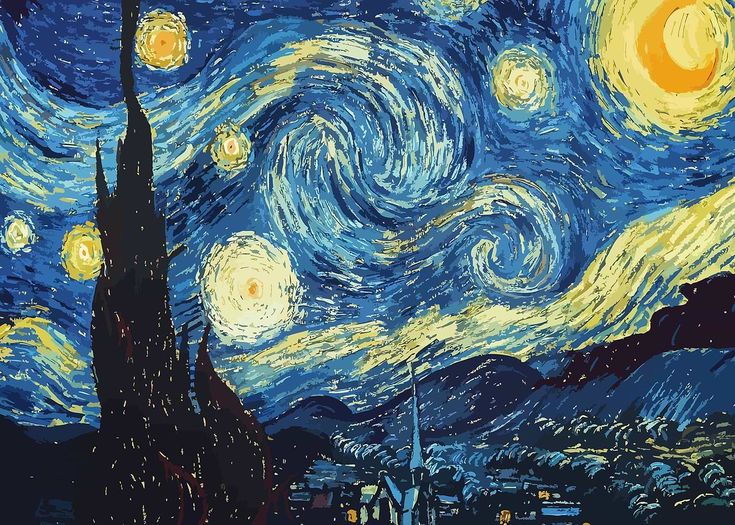
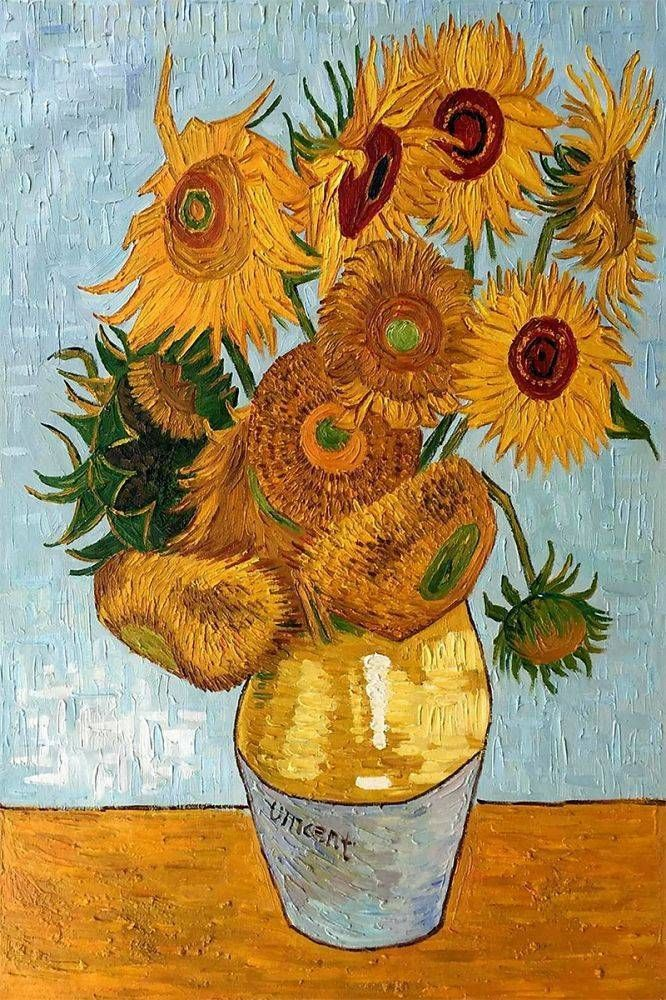
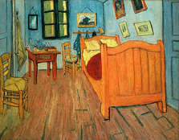
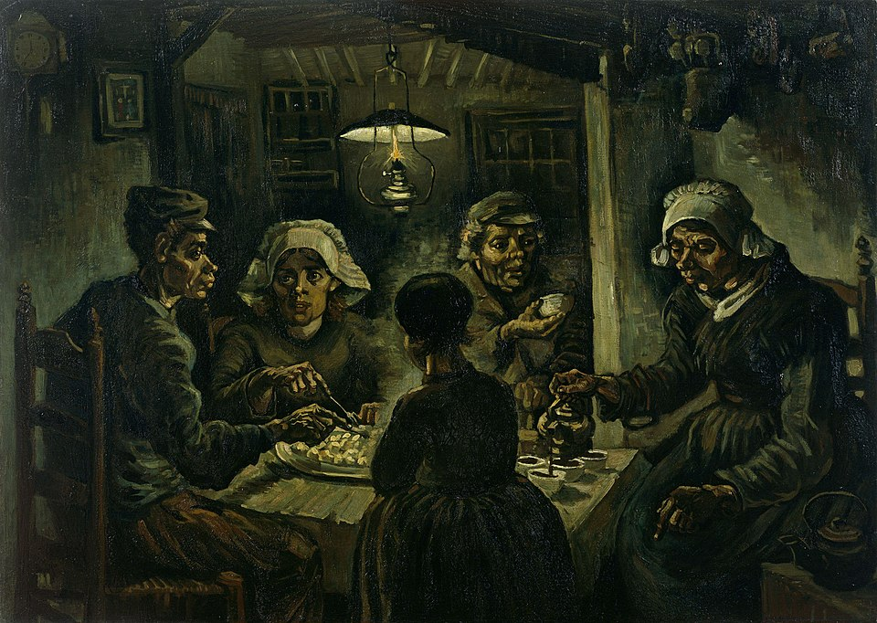

Vincent Willem van Gogh lahir pada 30 Maret 1853 di Zundert, Belanda. Ia merupakan anak dari seorang pendeta bernama Theodorus van Gogh dan Anna Cornelia Carbentus. Sejak muda, Van Gogh menunjukkan ketertarikan pada seni dan kehidupan spiritual. Sebelum menjadi pelukis, ia sempat bekerja di galeri seni Goupil & Cie di Belanda, London, dan Paris, serta pernah menjadi guru dan misionaris di Belgia. Namun, baru pada usia sekitar 27 tahun ia memutuskan untuk menekuni seni secara serius.
Karier seninya dimulai pada tahun 1880 . Pada masa awal, gaya lukisannya masih gelap dan realistik, seperti terlihat dalam karya The Potato Eaters (1885) yang menggambarkan kehidupan petani miskin di Nuenen. Setelah pindah ke Paris pada 1886, ia mulai mengenal para pelukis impresionis dan post-impresionis seperti Claude Monet dan Paul Gauguin. Dari sinilah gaya lukisnya berubah drastis warna-warnanya menjadi lebih cerah, sapuan kuas lebih ekspresif, dan bentuk-bentuknya lebih emosional.
Pada 1888, Van Gogh pindah ke Arles, Prancis Selatan, di mana ia menciptakan beberapa karya paling terkenalnya seperti Sunflowers, The Bedroom, dan Starry Night Over the Rhône. Setahun kemudian, ketika dirawat di rumah sakit jiwa di Saint-Rémy-de-Provence, ia melukis The Starry Night (1889) , yang kini dianggap sebagai salah satu karya seni paling terkenal di dunia. Meskipun sangat produktif ia menghasilkan lebih dari 2.000 karya seni termasuk sekitar 860 lukisan minyak Van Gogh hidup dalam kemiskinan dan gangguan mental yang berat. Ia meninggal pada 29 Juli 1890 di Auvers-sur-Oise , Prancis, akibat luka tembak yang diduga bunuh diri.
Selama hidupnya, Van Gogh tidak dikenal luas dan hanya menjual sedikit lukisan. Pengakuan terhadap karyanya baru datang setelah kematiannya pada 29 Juli 1890 di Auvers-sur-Oise, Prancis. Kini, ia dikenang sebagai salah satu pelukis paling berpengaruh dalam sejarah seni modern.
Van Gogh once said:
"And painted portraits have a life of their own that comes from deep in the soul of the painter and where the machine can't go." -Van Gogh 1888Baca Selengkapnya di Wikipedia
| Daftar Karya Ikonik Vincent van Gogh | |||
|---|---|---|---|
| No. | Judul Karya | Tahun | Hasil Karya |
| 1. | The Starry Night | 1889 |  |
| 2. | Sunflowers | 1888 |  |
| 3. | Café Terrace at Night | |
|
| 4. | The Bedroom |  | |
| 5. | The Potato Eaters | 1885 |  |